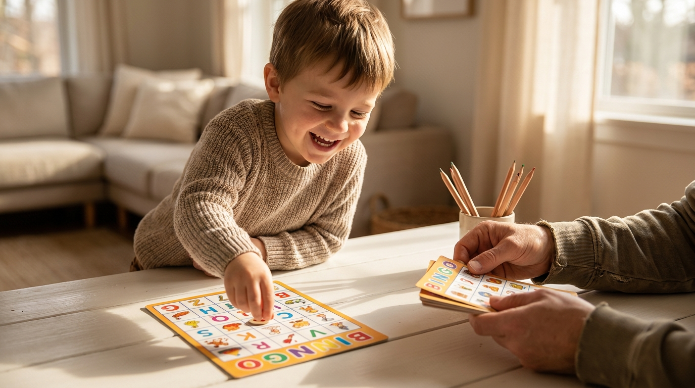

6 Ways to Play Alphabet Bingo (That Secretly Teach Reading)
By Leslie Dykstra · Certified Early Childhood Specialist · Williamson County, TN

Alphabet bingo is one of my very favorite tools, because it looks like pure fun and it's quietly teaching some of the most important early reading skills. The best part? You don't need six different games. You need one, and six ways to play it. As your child grows, you simply change how you call the letters.
You can use a store-bought set or make your own with index cards. If your game has both uppercase and lowercase letters mixed together, even better — that gives you extra ways to play. Here we go!
1. Call the letter name
The classic version. Say an uppercase or lowercase letter and let your child find it on their board. This builds pure letter recognition — the ground floor of reading. (If your game is uppercase only, you can make your own lowercase call cards to match.)
2. Call the letter sound only
Now say the sound the letter makes instead of its name — "/b/" instead of "B" — and your child locates the letter. This is a big, important step: it connects letters to sounds, which is exactly what reading requires.
3. Fast Bingo
Once your child is close to mastering all their letters, turn up the fun. Say the sounds quickly and see how fast they can find each letter, racing all the way to a full-board BLACKOUT! Children love the speed and the challenge, and they're practicing without even realizing it.
4. Name a word that begins with the letter
Ready for a bigger challenge (ages 4 to 6)? Say a word and ask your child to find the letter it starts with. "What is the beginning sound in horse?" They listen, isolate the /h/, and find the H. This is called phoneme isolation, and it's a powerful reading skill dressed up as a game.
5. Name a word that ends with the letter
The same idea, flipped to the end of the word (ages 4 to 6). "What is the ending sound in frog?" Your child listens for the final sound — /g/ — and covers the G. Beginning sounds tend to come first for little ones, so celebrate this one when they get it, because ending sounds are trickier!
6. Mix up where the sound lives
Once your child is comfortable, keep them on their toes by switching between beginning, middle, and ending sounds. "Find the letter that makes the middle sound in cat." Hearing sounds in every position of a word is exactly the skill children use to sound out and spell — and now it's just part of the game.
Why this simple game works so well
Every version above is quietly building the bridge from letters to reading: letter recognition, letter sounds, and phoneme awareness. Because it's a game, your child stays relaxed and confident — and confident children learn faster. This is exactly the kind of playful, skill-building work I love, and it fits beautifully with the order I recommend for teaching phonics at home.
Frequently asked questions
What age is alphabet bingo best for?
The simplest versions — matching letters as you call them — work well from about age 3. The phonics versions, where you say a sound or a word and your child finds the matching letter, are a great fit for ages 4 to 6, when children are ready to connect letters to the sounds they make.
Do I need to buy an alphabet bingo game?
Not at all. A store-bought set is handy, but you can make your own with index cards — write letters on a grid for the boards and single letters for your call cards. Homemade lets you choose uppercase, lowercase, or a mix, which is perfect for whatever stage your child is in.
What is phoneme isolation and why does it matter?
Phoneme isolation is the skill of hearing one specific sound in a word — like noticing the /h/ at the start of horse. It's a building block of reading. When you ask your child which letter makes the first sound in a word, you're strengthening the exact skill they'll use to sound out and spell words later.
Want to see your child thrive?
If you'd like to talk about where your child is and what would help them most, book a free 15-minute consultation with Leslie. Little Minds, Big Futures — where every child's potential takes flight.